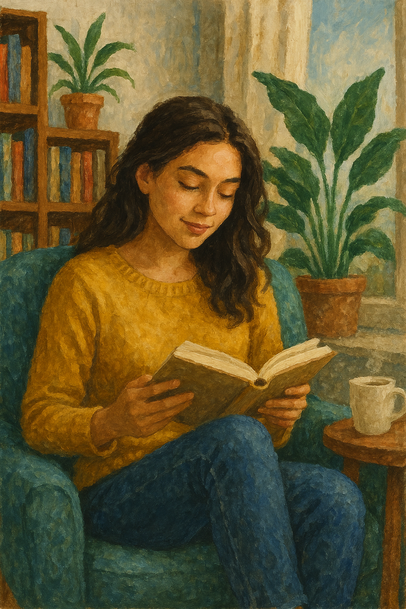
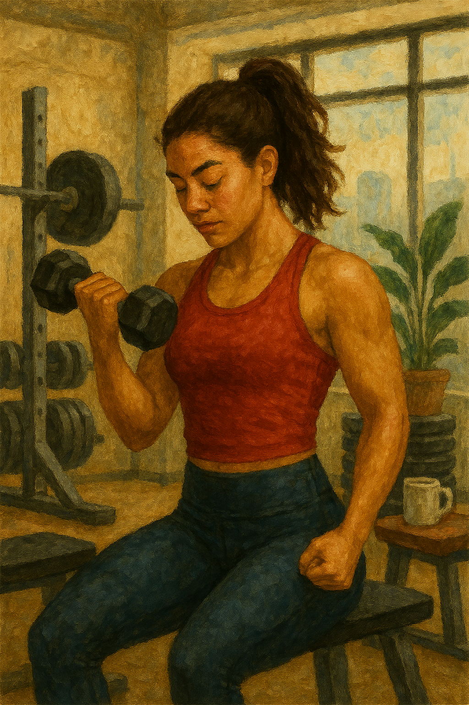
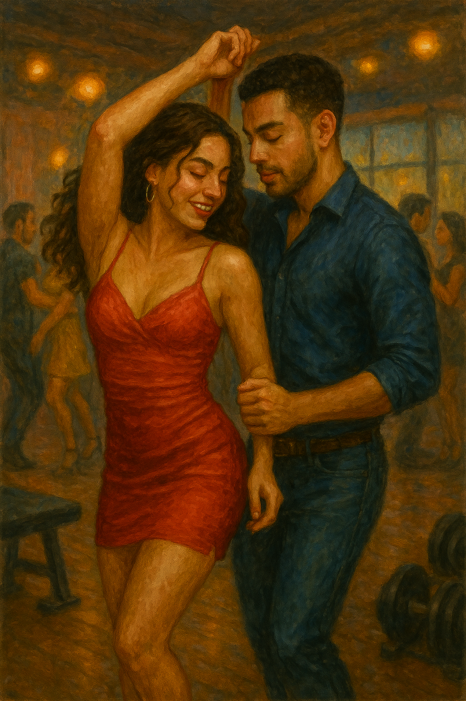

Mi nombre es Marella Salvatore, nací en 1988 en la ciudad de Cali. Soy la mayor de 4 hermanos (3 mujeres y 1 hombre). Estudié instrumentación quirúrgica en la Universidad Santiago de Cali y me especialicé en mercadeo. Soy casada y tengo una hija de 10 años.
Vivimos en una casa finca en Santa Marta donde tenemos gallinas ponedoras, patos y una vaca. También tenemos un huerto de hortalizas y un lago de peces.
Me gusta leer sobre ocultismo, astrología y medicina tradicional china.
Disfruto entrenar para mantenerme activa y saludable.
Me encanta bailar salsa, es una parte esencial de mi vida.
